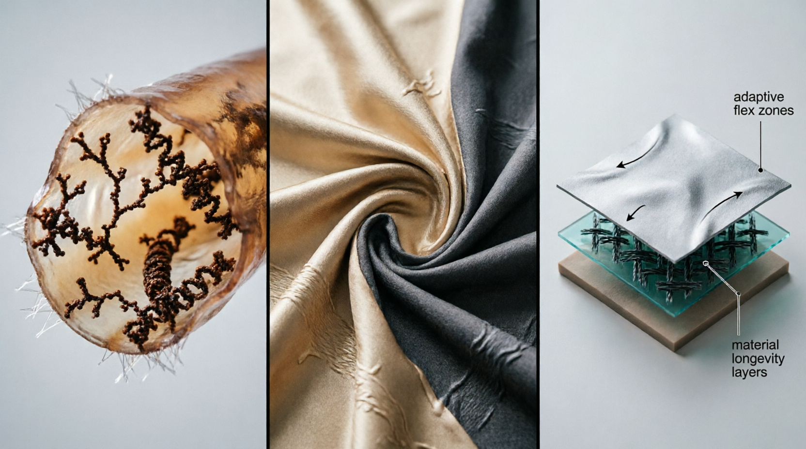

ADAPTATION
Archive.
"As a fashion brand, it is essential for our clients to see the garments we design. Many of our clients are primarily interested in understanding our aesthetic and product direction. Therefore, we present a curated selection of modern, fashion-forward womenswear to showcase our design language."
SoroShell Core
The foundation of the Adaptation series. A high-density polymer weave optimized for urban resilience and molecular durability.


Avant Shell V2
A master study in structural rigidity using Sorona® high-memory polymers. This high-neck shell features integrated thermal vents and a zero-waste architectural seam system.
Sorona® Trench
Fluid silhouette engineered with moisture-wicking bio-polymers for adaptive climate response. The textile logic prioritizes organic drape without sacrificing industrial-grade protection.


Matrix Drape
Organic fluidity meets synthetic precision. An asymmetrical bio-silk drape engineered to respond to biometric movement while maintaining molecular-level durability and structural integrity.

Multi-layer tech-trench utilizing aerated weaving techniques to optimize thermal regulation.

Thermal Veil
An ultra-lightweight translucent layer designed for high-altitude moisture management. The 'Veil' architecture utilizes variable-density bio-polymers to create a second skin that breathes as the wearer moves.
Aerated Knit
Engineered using zero-waste 3D knitting technology. This garment logic integrates aerated channels directly into the fiber matrix, providing superior insulation while remaining nearly weightless.


Flux Overcoat
A heavy-duty adaptive overcoat built for industrial environments. Reinforced with molecularly fused shielding, the Flux architecture offers unprecedented protection against biometric environmental stressors.
Bio-Mesh Bodysuit
The ultimate biometric interface layer. Utilizing a complex mesh of bio-synthetic fibers, this bodysuit provides real-time thermal balancing and compression support for high-stakes movement.


Kinetic Shell
A pursuit-grade shell designed for extreme kinetic mobility. Featuring laser-cut articulation points and a dynamic polymer membrane that tightens upon impact to protect structural integrity.
Structural Finale
The culmination of the Adaptation archive. This architectural masterpiece synthesizes all SoroFib fiber technologies into a single, cohesive garment system that represents the future of material innovation.